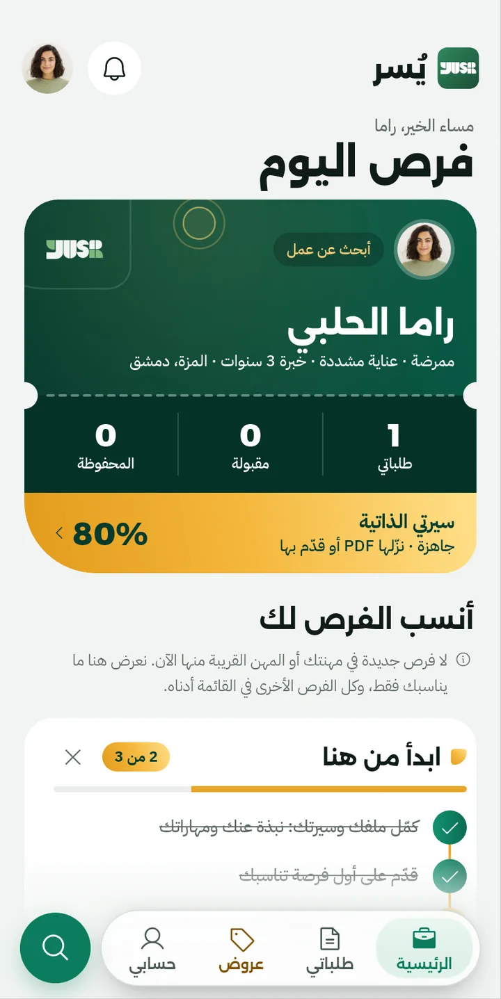
الفرصة التي تشبهك
يعرف يُسر مهنتك ومستواك، فيقترح ما يليق بك، ولا يعرض على الطبيب عمل ممرّض.
وظائف · عقارات · مركبات
حساب واحد للوظائف والعقارات والمركبات. لكلّ عالم شاشاته وقواعده، ولا يختلط بعضها ببعض.
العمل
فرص تناسب مهنتك، بتفاصيلها كاملة: الراتب، والدوام، والمكان.
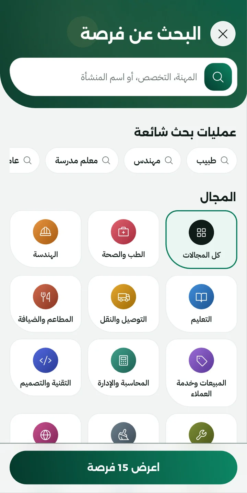
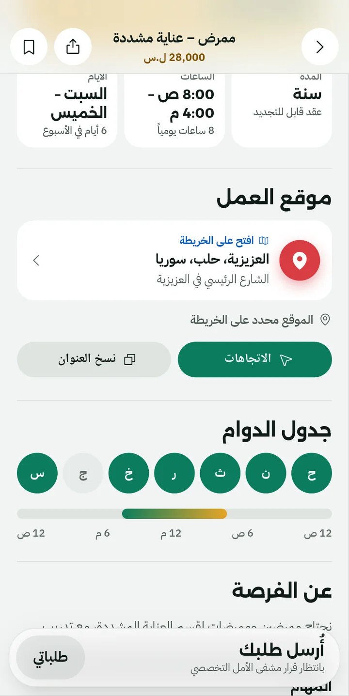
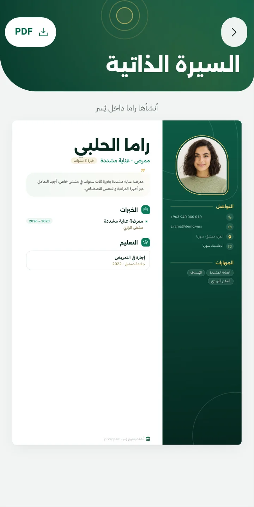
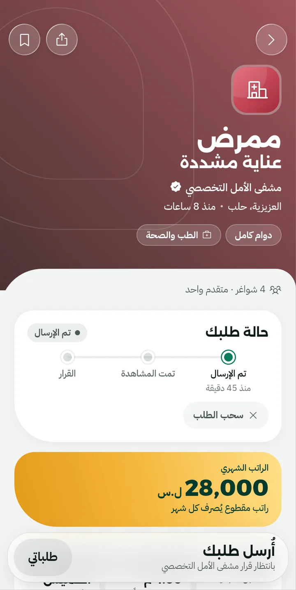

يعرف يُسر مهنتك ومستواك، فيقترح ما يليق بك، ولا يعرض على الطبيب عمل ممرّض.
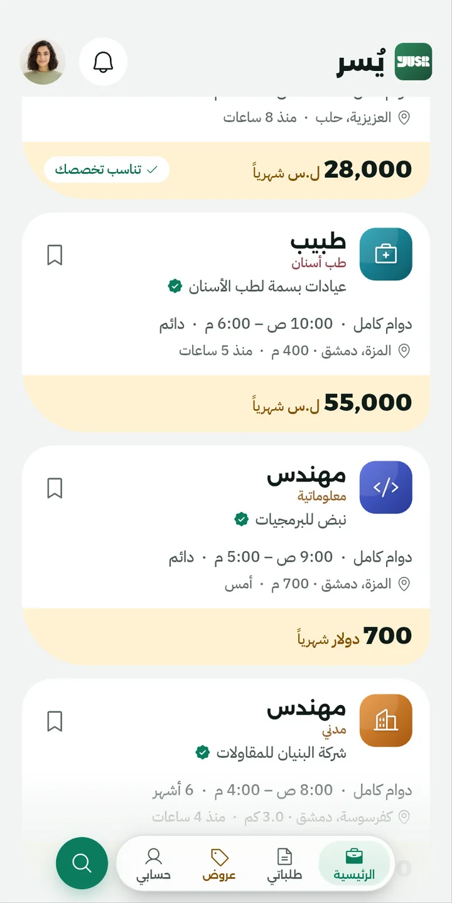
نطاق 1 أو 3 أو 10 كم من موقعك. موقعك لا يُخزَّن ولا يُشارَك.
راتب شهري أو أجر يومي، والدوام والمكان، وتقييمات من عملوا هناك فعلاً.
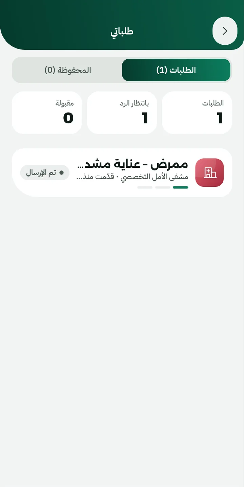
من «تم الإرسال» إلى «القرار»، ثم محادثة مع صاحب العمل داخل التطبيق.
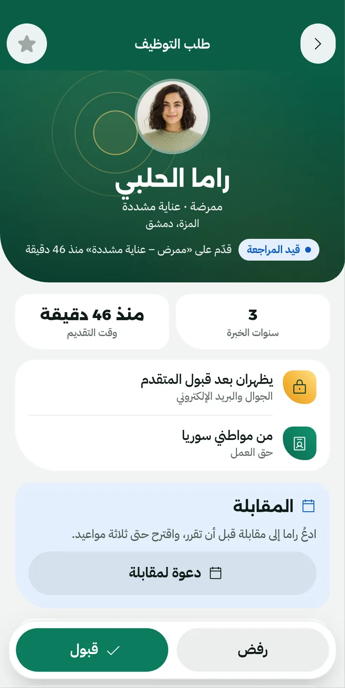
تعرف من راجعت ومن ينتظر، وتدعو إلى مقابلة بموعد ومكان واضحين.
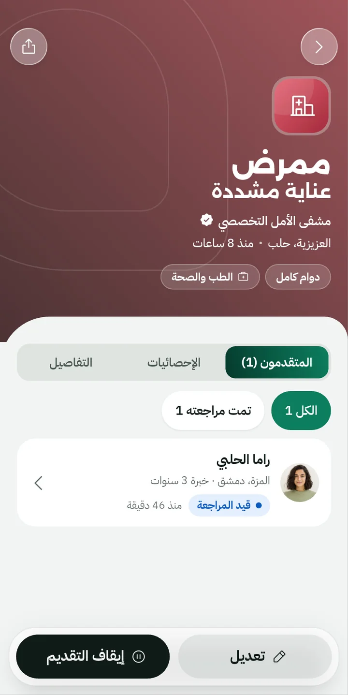
من شاهدها ومن تقدّم، يوماً بيوم.
المسكن
جولة 360 داخل البيت، غرفةً غرفة.
اسحب لتنظر حولك · صور 360 توضيحية
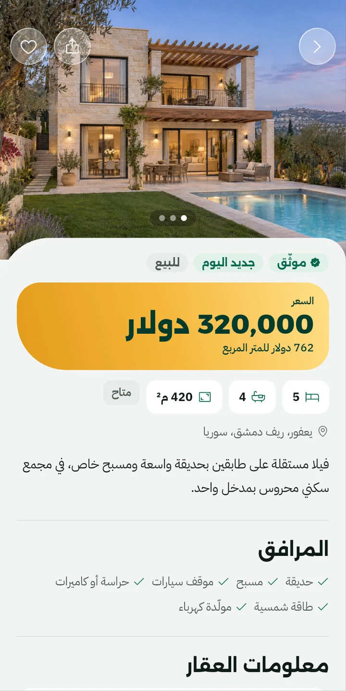
صور كبيرة، وشارات واضحة، ومعلومات كاملة قبل أن تسأل.
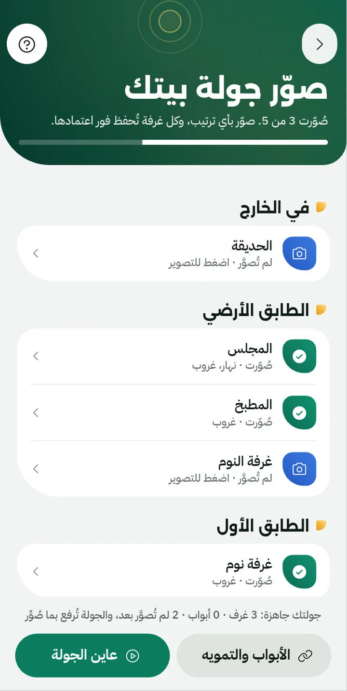
غرفةً غرفة، بأي ترتيب، ويرشدك التطبيق لقطةً لقطة.
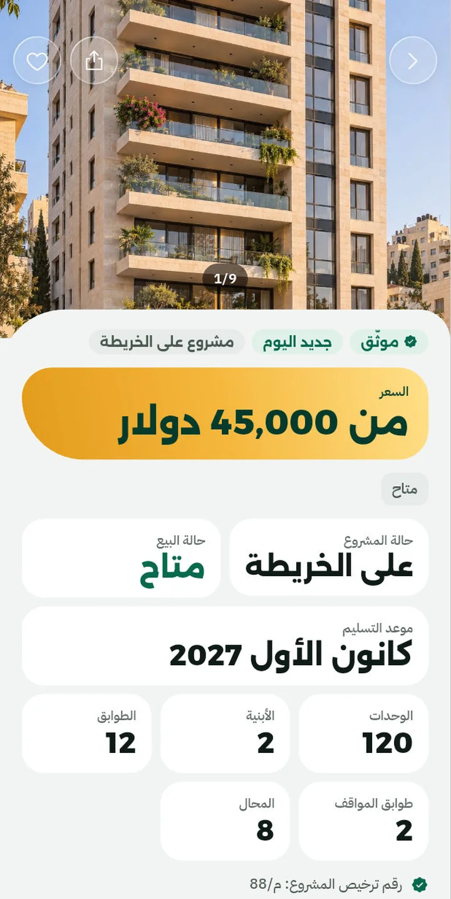
النماذج والأسعار وموعد التسليم، في صفحة المطوّر.
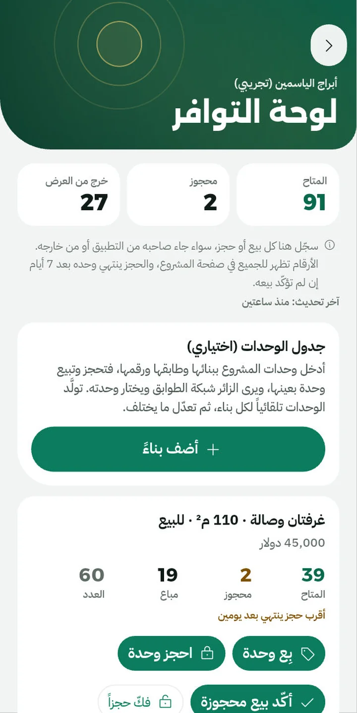
المتاح والمحجوز والمُباع، وتطلب وحدة بعينها.
تكتب في طلب الاهتمام السعر الذي يناسبك. يصل إلى صاحب الإعلان وحده، ولا يراه أحد غيره. لا مزايدة ولا مزاد.
المركبة
تقرير فحص يلوّن السيارة قطعةً قطعة. جرّبه: اختر حالة، ثم المس قطعة.
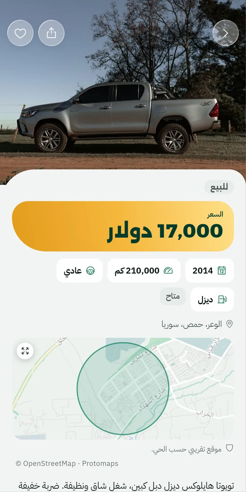
المواصفات كاملة، وحالة كل قطعة، وحجز تجربة قيادة.
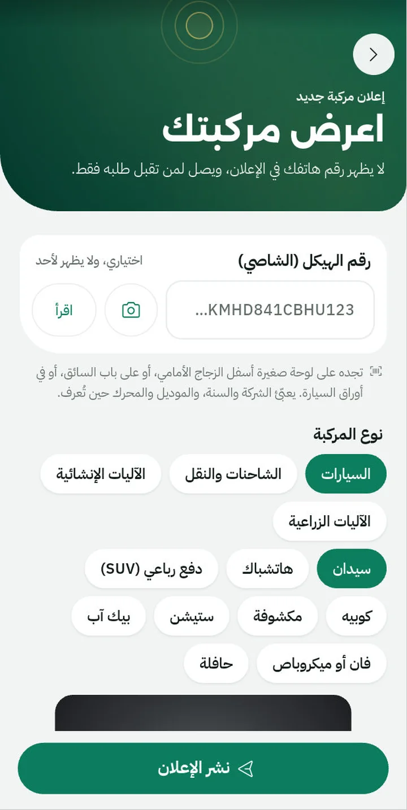
اختر النوع واملأ التفاصيل. رقم هاتفك لا يظهر في الإعلان.
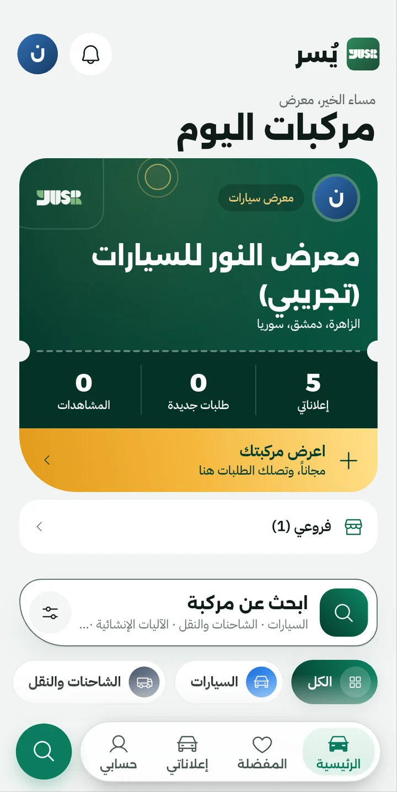
إعلاناتك وفروعك والطلبات الجديدة، من أول نظرة.
الأمان
الإحصاءات
لكل إعلان أرقامه: من شاهده، وكم طلباً جاءه. وللسوق كله خرائط وتقارير تُبنى من إعلانات يُسر نفسها.
المشاهدات في آخر 7 أيام
0عدد الباحثين عن عقار في كل محافظة
في آخر 7 أيام
0الأرقام في هذه البطاقات أمثلة توضيحية، تُريك شكل الإحصاءات في التطبيق.
 صاحب عمل
صاحب عمل مالك
مالك معرض ووكالة
معرض ووكالةسماء يُسر
سماء الشاشة الرئيسية تتبع ساعتك: شمس النهار، وقمر الليل. ومعها الوضع الداكن، وبالعربية والإنجليزية.
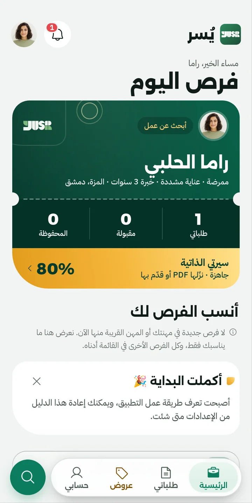
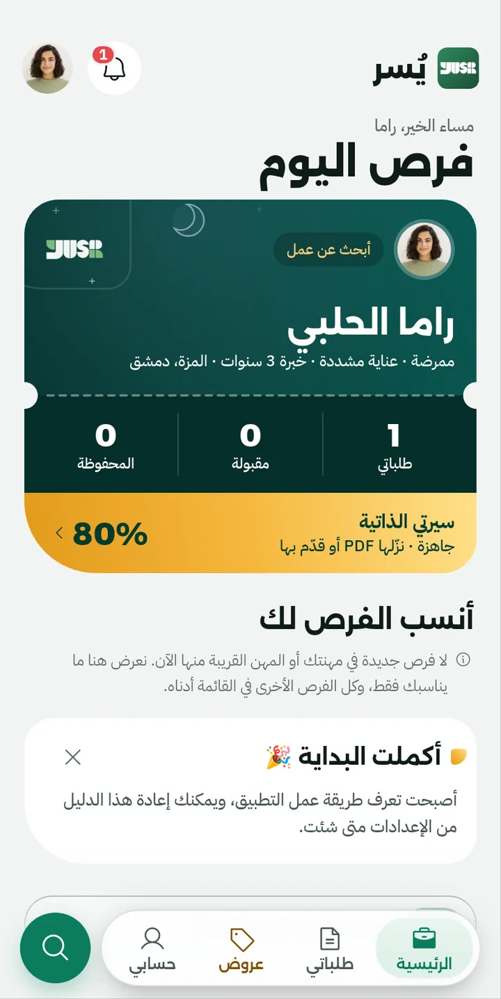
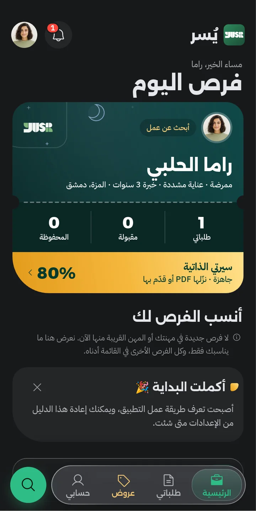
نعم. البحث والتقديم والنشر مجانية، ولا رسوم على إعلانات العقارات.
حين توافقان كلاكما على مشاركة الأرقام، بعد قبول الطلب. قبل ذلك تبقى الأرقام مخفية.
لا، هاتفك يكفي. يرشدك التطبيق لقطةً لقطة، ثم يركّب الغرفة بنفسه.
بحساب من النوع المناسب وطلب توثيق من داخل التطبيق، ثم صفحة بهويتك تديرها بنفسك.
نعم. يفتح التطبيق بلغة هاتفك، وتستطيع تغييرها من الإعدادات متى شئت.
يبدأ من سوريا، ويتّسع للعرب جميعاً.